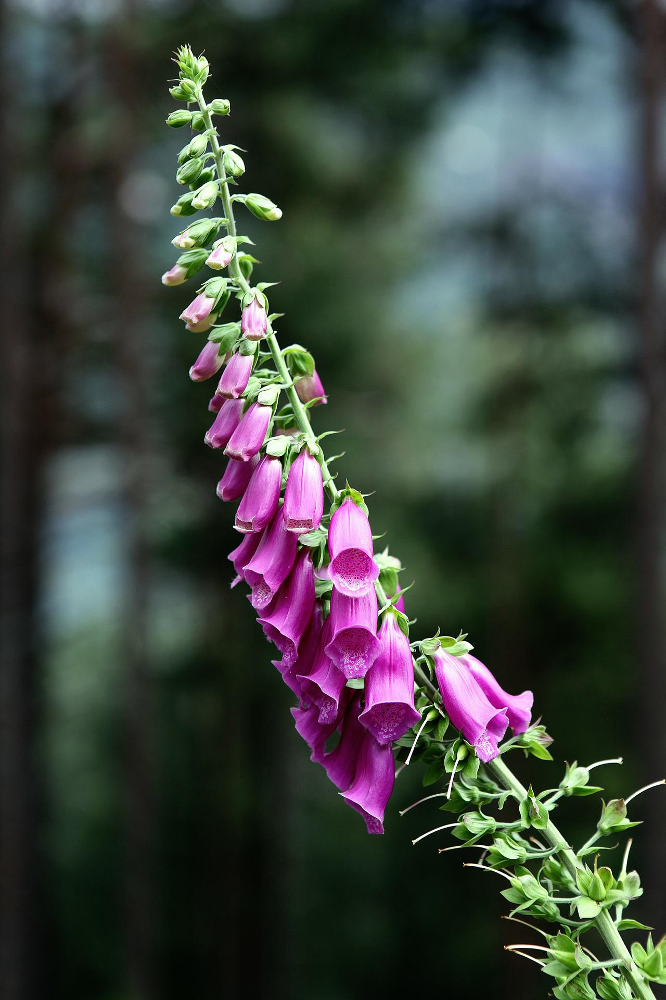
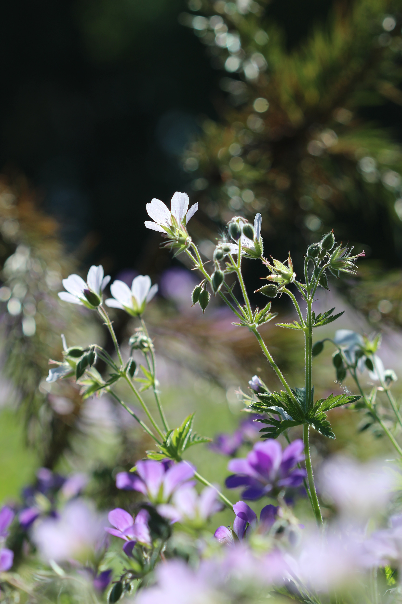
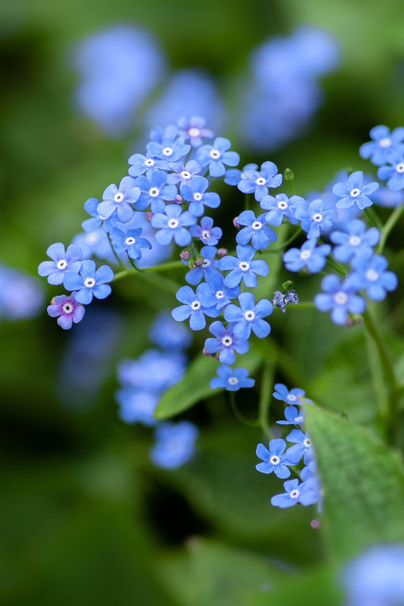
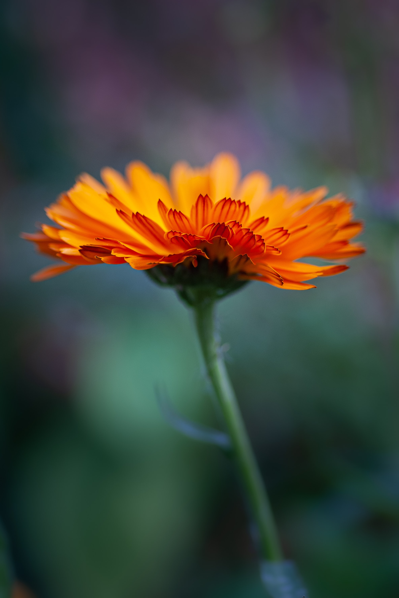
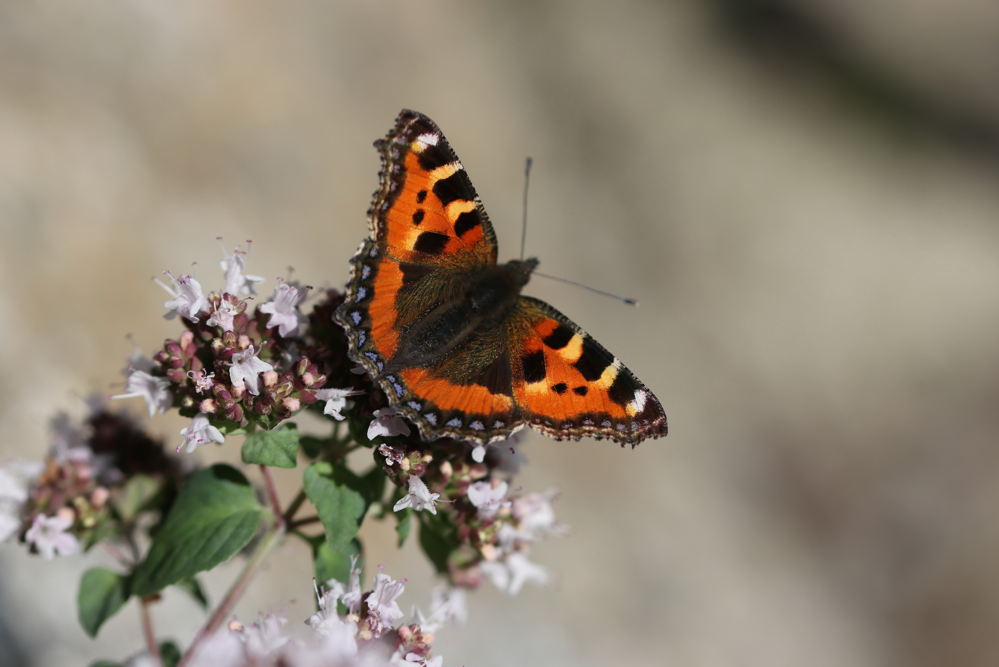
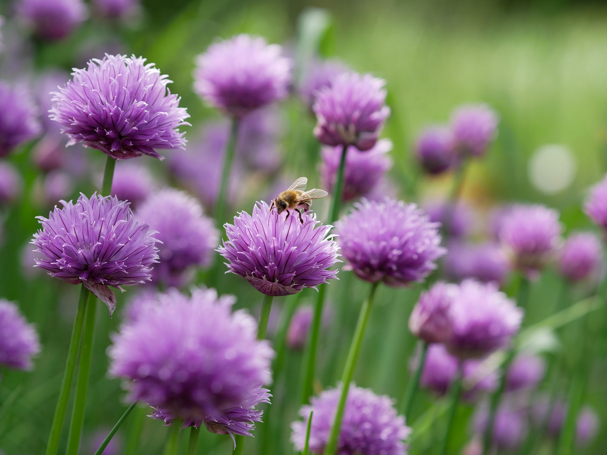
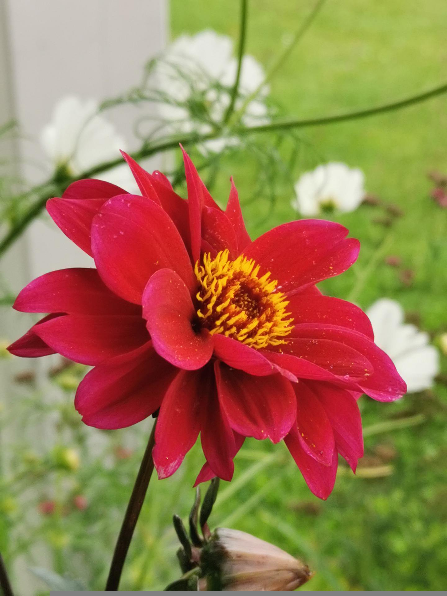
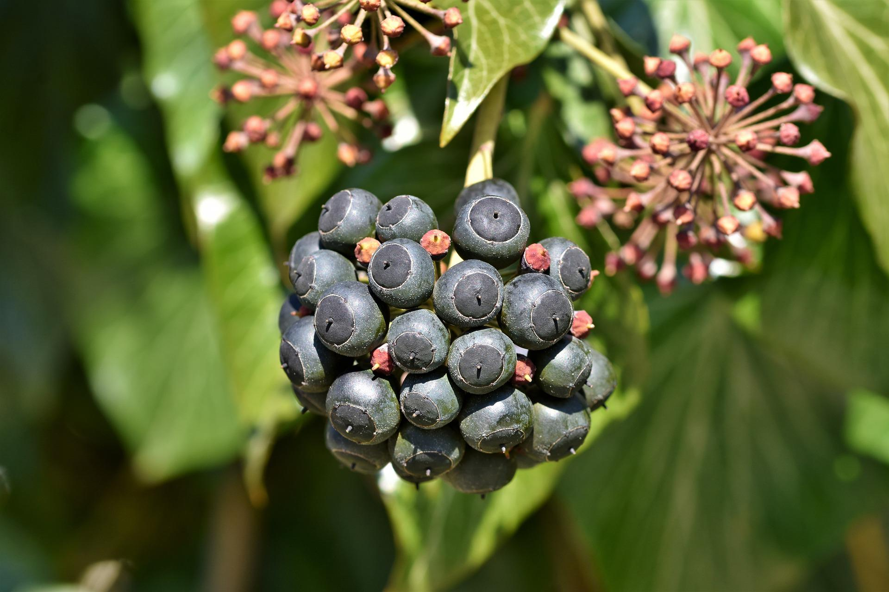

Planting for nature: My top 10 wildlife-friendly plants
Collectively our gardens are home to a wide range of living creatures and form an increasingly beneficial habitat for wildlife.
The way we choose to manage our outdoor spaces can make a big difference to the natural world. By growing more wildlife-friendly plants we can attract a wider range of species into our gardens, creating a haven for nature.
These plants are some of the best ornamental flowers, wildflowers, and herbs in my small back garden that wildlife absolutely love.
1. Common foxglove (Digitalis purpurea)
This cottage garden classic is one of my favourite native flowers. An excellent source of nectar for both bees and moths.

2. Hardy geranium/cranesbill (Geranium spp.)
Most hardy Geraniums are great for bees with plenty of easy to grow species to choose from.

3. Forget-me-not (Myosotis sylvatica)
This prolific spreader is known for attracting bees, butterflies and moths with its nectar rich flowers. It also provides food for many caterpillars.

4. Pot marigold (Calendula officinalis)
An excellent companion plant that attracts garden pest predators. Sow liberally around your vegetable garden to attract lacewings whose larvae will feed on aphids.

5. Marjoram (Origanum vulgare)
A must have in any kitchen garden, this aromatic herb is attractive to a whole host of pollinators.

6. Chive (Allium schoenoprasum)
Many Allium species are great for pollinators and chives are no exception. They are easy to grow and should feature in every herb garden.

7. Dahlia (single or semi-double, Dahlia spp.)
Commonly underrated for their wildlife friendliness, open Dahlia varieties are very attractive to bees. One of my absolute favourite garden flowers.

8. Ivy (Hedera helix)
The plain green flowers of ivy are are a magnet for invertebrates including butterflies, bees, wasps, and hoverflies. They flower in early-autumn when most other flowers have finished, providing a much needed food source at this time of year. The berries then provide food for birds over winter.

9. Comfrey (Symphytum officinale)
Another kitchen garden essential, bees absolutely love comfrey. It can be made into a rich liquid plant feed and is an excellent addition to the compost heap. As a prolific seeder it can be somewhat invasive and carefully siting is important.

10. Wild strawberry (Fragaria vesca)
These minature wild plants make a tasty snack for many birds and mammals (including humans for that matter!)